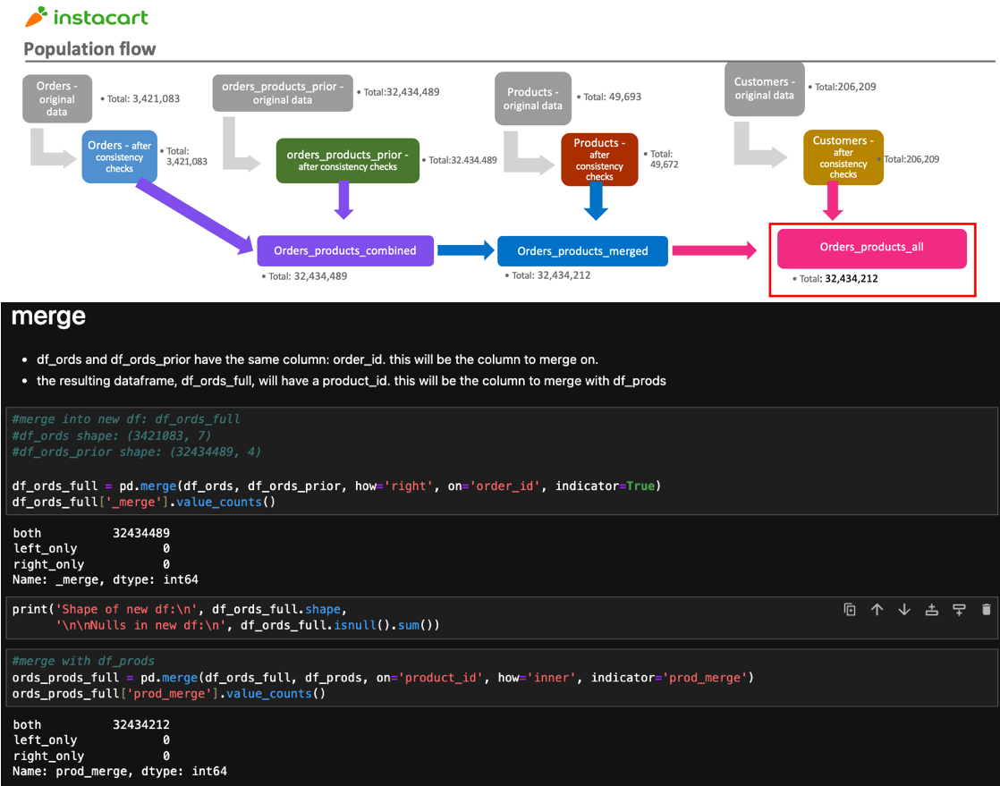
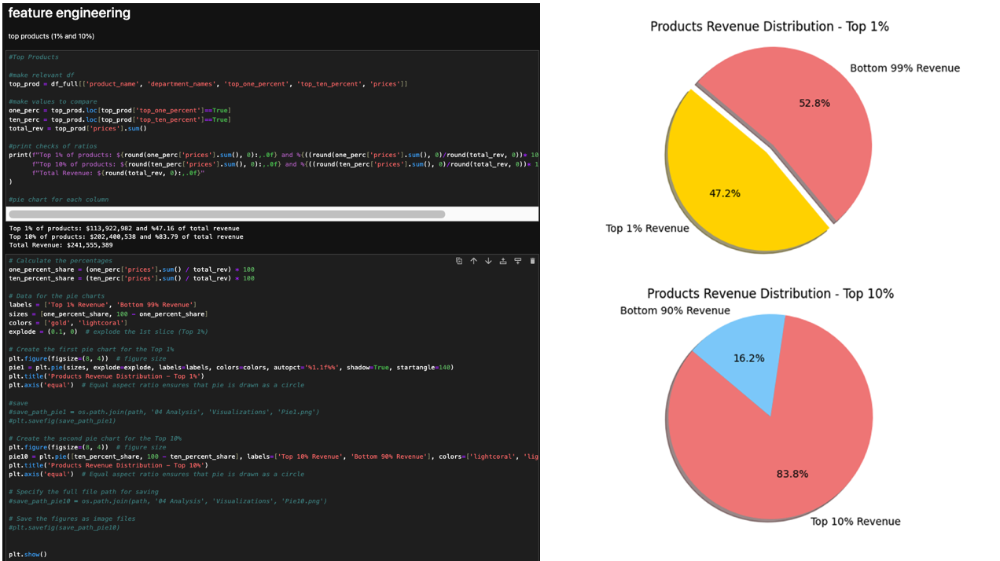

European Education Costs
Using Python to prepare data for a Tableau dashboard illustrating the relationship between GDP per capita and higher education cost.
Learn more
Python and Tableau to understand customer spending.
The Instacart dataset encompasses a sample size of over 3 million grocery orders originating from more than 200,000 anonymized users. This size of data requires certain techniques in order to efficiently manipulate the data, such as saving to pandas pickle format to save computational resources.
This flow chart and sample of python code breaks down some of the initial steps in the analysis.
Analyzing the total revenue breakdown reveals that just 1% of products contribute to 47% of the revenue, while the top 10% of products accounts for 84% of total revenue. This provides valuable insights into guiding effective recommendations. Care should be taken to focus on the top products, as contribution to revenue is asymmetric.
| Observation | Recommendations |
|---|---|
| Wednesday and Thursday are the least busy days. | Implement Special Weekday Savings, on Wednesdays and Thursdays. Offer exclusive discounts, promotions, or incentives during these less busy days to attract more customers and boost sales. |
| 92.7% of revenue is made between the hours of 9am - 5pm. | Time-Sensitive Deals: Offer time-limited discounts or promotions during the peak hours to create a sense of urgency. Focus on high margin products. |
| The top 1% of products drive over 47% of revenue. Produce and Dairy/Eggs are by far the largest revenue drivers. | Prioritize marketing the top 1% of products with targeted and time-sensitive ad and promotion campaigns. Implement strategy to stop stocking bottom n% of products on a rolling basis. |
| Loyal customers are a small relative number of individuals, have a high total order count and drive outsized revenue per customer. | Implement Loyalty Rewards Program. Incentivize and retain loyal customers. Offer exclusive discounts, early access to deals, or points for every purchase. |
| The South leads in Revenue, the Northeast is trailing. Pennsylvania is a strong market, but New York and New Jersey are lagging. | Local Partnerships: Collaborate with local businesses and suppliers in underperforming regions to expand your product selection. Offer unique, locally-sourced items. |
| Midlife Married with Kids and the Elder Married with Kids are the top spenders. | Targeted Product Bundles: Create product bundles and promotions specifically designed for Midlife and Elder Families with kids. These bundles can include family-sized products, meal kits, and household essentials. |
| The scale of the produce department's success is evident. | Cross-Department Packaging: Foster collaboration between departments to enhance product pairings. Work to identify high-margin products that complement specific customer profiles and produce items. Implement joint marketing campaigns. |
Lessons Learned:
Using Python to prepare data for a Tableau dashboard illustrating the relationship between GDP per capita and higher education cost.
Learn moreEvery year, hospitals are faced with staffing challenges due to the influx of influenza patients. This prescriptive analysis uses USA CDC data and seeks to define and direct staff from low-need states to high-need states.
Learn more